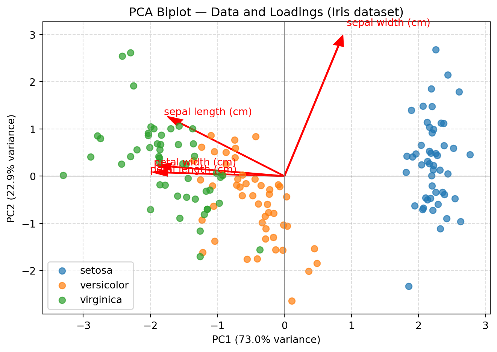
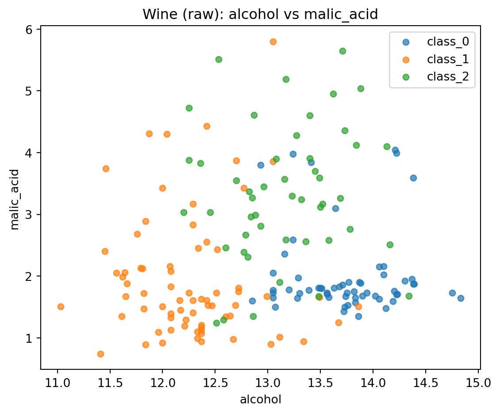
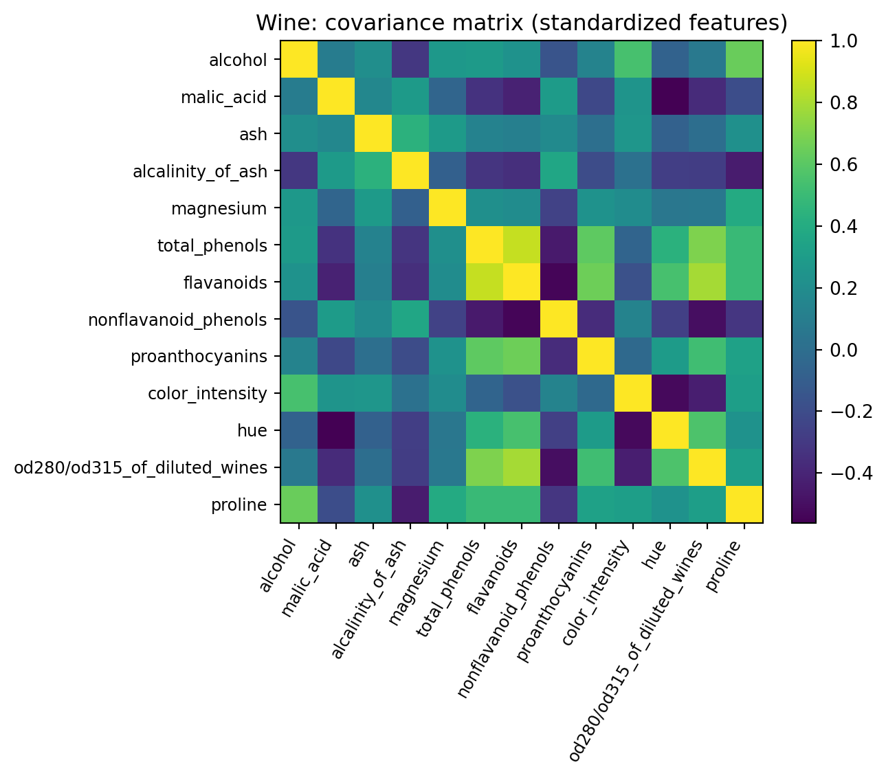

import numpy as np
import matplotlib.pyplot as plt
from sklearn.datasets import load_iris
iris = load_iris()
X = iris.data # shape (150, 4) = sepal len/width, petal len/width
y = iris.target # 0,1,2
target_names = iris.target_namesDimensionality Reduction
Dimensionality reduction is the art of compressing data without losing its essence.
Why do we need dimensionality reduction?
- The Course of dimensionality
- If the data set has n dimensions, we need >>n data points
- Redundancy in large data sets
- Some dimensions might be correlated and redundant
- Some dimensions might only contribute little to explain a target variable
Example:
Coding example:
Let’s generate some simple data set.
Let’s have a look at the data
The data is 4 dimensional, so we need to plot 4 plots to showcase the distribution of each dimension against each other
feature_names = iris.feature_names
fig, axs = plt.subplots(2, 2, figsize=(10, 10))
axs[0, 0].scatter(X[:, 0], X[:, 1], alpha=0.7)
axs[0, 0].set_xlabel(feature_names[0])
axs[0, 0].set_ylabel(feature_names[1])
axs[0, 0].set_title(f"{feature_names[0]} vs {feature_names[1]}")
# Scatter plot 2: Feature 0 vs Feature 2
axs[0, 1].scatter(X[:, 0], X[:, 2], alpha=0.7)
axs[0, 1].set_xlabel(feature_names[0])
axs[0, 1].set_ylabel(feature_names[2])
axs[0, 1].set_title(f"{feature_names[0]} vs {feature_names[2]}")
# Scatter plot 3: Feature 1 vs Feature 2
axs[1, 0].scatter(X[:, 1], X[:, 2], alpha=0.7)
axs[1, 0].set_xlabel(feature_names[1])
axs[1, 0].set_ylabel(feature_names[2])
axs[1, 0].set_title(f"{feature_names[1]} vs {feature_names[2]}")
# Scatter plot 4: Feature 2 vs Feature 3
axs[1, 1].scatter(X[:, 2], X[:, 3], alpha=0.7)
axs[1, 1].set_xlabel(feature_names[2])
axs[1, 1].set_ylabel(feature_names[3])
axs[1, 1].set_title(f"{feature_names[2]} vs {feature_names[3]}")
plt.tight_layout()
plt.show()
Standardize the data
Standardizing is important as otherwise one “longer” dimension overpowers the “shorter” ones.
mu = X.mean(axis=0) # (d,)
sigma = X.std(axis=0, ddof=1) # (d,)
X_std = (X - mu) / sigma Calculate the covariance matrix
Next we calculate the covariance matrix for X_std.
The covariance is given by:
\[\text{cov}(X, Y) = \frac{1}{n - 1} \sum_{i=1}^{n} (X_i - \bar{X})(Y_i - \bar{Y})\]
You can use the fact that the unnormalized covariance of a matrix X is given by:
\[ {X}^T {X} = \begin{bmatrix} \sum \tilde{x}_1^2 & \sum \tilde{x}_1 \tilde{x}_2 & \cdots \\ \sum \tilde{x}_2 \tilde{x}_1 & \sum \tilde{x}_2^2 & \cdots \\ \vdots & \vdots & \ddots \end{bmatrix} \]
n_samples = X_std.shape[0]
Cov = (X_std.T @ X_std) / (n_samples - 1)Getting the eigen values
The formal definition of the eigen values decomposition for a square matrix A is: \[ \begin{aligned} A \cdot v &= \lambda v \\ A \cdot v - \lambda v &= 0 \\ (A - \lambda I) v &= 0 \end{aligned} \]
We now solve for \(\lambda\) in the determinant of this equation:
\[det(A \cdot v - \lambda v )= 0\] which gives a polynomoal in \(\lambda\). Solve for \(\lambda\) (the roots are the eigen values).
Suppose a transformation (matrix) stretches space differently along different axes: \[ A = \begin{bmatrix} 2 & 1 \\ 1 & 2 \end{bmatrix} \]
\[\begin{aligned} det(A \cdot v - \lambda v )= 0 \\ \end{aligned}\]becomes:
\[ \det(A - \lambda I) = \begin{vmatrix} 2 - \lambda & 1 \\ 1 & 2 - \lambda \end{vmatrix} = (2 - \lambda)(2 - \lambda) - (1)(1) = (2 - \lambda)^2 - 1 = \lambda^2 - 4 \lambda + 3 \]
This leads us to the solutions \(\lambda\) = 1 and \(lambda\) = 3.
Getting the eigenvectors
To get the eigenvectors, we have to plug in the eigenvalues into the equation above and solve for \(v\): \[ (A - \lambda I) v = 0\]
For λ = 3 \[ A - 3I = \begin{pmatrix}2 & 1\\[2pt] 1 & 2\end{pmatrix} - 3\begin{pmatrix}1 & 0\\[2pt] 0 & 1\end{pmatrix} = \begin{pmatrix}2-3 & 1\\[2pt] 1 & 2-3\end{pmatrix} = \begin{pmatrix}-1 & 1\\[2pt] 1 & -1\end{pmatrix}. \]
From this,set up the equation: \[ \begin{pmatrix} -1 & 1 \\ 1 & -1 \end{pmatrix} \begin{pmatrix} x \\ y \end{pmatrix} = \begin{pmatrix} 0 \\ 0 \end{pmatrix} \]
This gives the equation: \[ x + y = 0 \quad \Rightarrow \quad y = x \] So, any vector of the form \[\begin{pmatrix} x \\ x \end{pmatrix}\]is an eigenvector. Choose a simple one like x = 1: \[v_1 = \begin{pmatrix} 1 \\ 1 \end{pmatrix} \]
For λ = 1
\[ A - I = \begin{pmatrix}2 & 1\\[2pt] 1 & 2\end{pmatrix} - \begin{pmatrix}1 & 0\\[2pt] 0 & 1\end{pmatrix} = \begin{pmatrix}1 & 1\\[2pt] 1 & 1\end{pmatrix}. \]
Set up the equation: \[ \begin{pmatrix} 1 & 1 \\ 1 & 1 \end{pmatrix} \begin{pmatrix} x \\ y \end{pmatrix} = \begin{pmatrix} 0 \\ 0 \end{pmatrix} \]
This gives the equation: \[ x + y = 0 \quad \Rightarrow \quad y = -x \] So any vector of the form \[\begin{pmatrix} x \\ -x \end{pmatrix}\]is an eigenvector. Choose x = 1:
\[ v_2 = \begin{pmatrix} 1 \\ -1 \end{pmatrix} \]
Final Eigenpairs
\[ \lambda = 3, \] \[ v_1 = \begin{pmatrix} 1 \\ 1 \end{pmatrix} \]
\[ \lambda_2 = 1, \] \[ v_2 = \begin{pmatrix} 1 \\ -1 \end{pmatrix} \]
In python:
eigvals, eigvecs = np.linalg.eigh(Cov) # eigvecs columns = eigenvectors
# sort by descending eigenvalue (most variance first)
idx = np.argsort(eigvals)[::-1]
eigvals = eigvals[idx]
eigvecs = eigvecs[:, idx]
print(eigvals)
print(eigvecs)[2.91849782 0.91403047 0.14675688 0.02071484]
[[-0.52106591 0.37741762 0.71956635 0.26128628]
[ 0.26934744 0.92329566 -0.24438178 -0.12350962]
[-0.5804131 0.02449161 -0.14212637 -0.80144925]
[-0.56485654 0.06694199 -0.63427274 0.52359713]]Plotting
Z = X_std @ eigvecs[:, :2] # shape: (n_samples, 2)
print(Z.shape)(150, 2)plt.figure(figsize=(6,5))
for label in np.unique(y):
mask = (y == label)
plt.scatter(Z[mask, 0], Z[mask, 1],
alpha=0.7, s=40, label=target_names[label])
plt.xlabel("Principal Component 1")
plt.ylabel("Principal Component 2")
plt.title("Iris projected onto first two principal components")
plt.legend()
plt.tight_layout()
plt.show()
# --- P Plot eigenvectors as red arrows
# Scale arrows by eigenvalues (optional: to make them more visible)
scaling_factor = 3 # tweak for visibility
for i in range(2):
plt.arrow(0, 0, eigvecs[i, 0]*scaling_factor, eigvecs[i, 1]*scaling_factor,
color='red', width=0.015, head_width=0.15)
plt.text(eigvecs[i, 0]*scaling_factor*1.15,
eigvecs[i, 1]*scaling_factor*1.15,
feature_names[i],
color='red', fontsize=10)
for label in np.unique(y):
mask = (y == label)
plt.scatter(Z[mask, 0], Z[mask, 1],
alpha=0.7, s=40, label=target_names[label])
# --- 3️⃣ Label axes with variance explained
explained_var_ratio = eigvals / eigvals.sum()
plt.xlabel(f"PC1 ({explained_var_ratio[0]*100:.1f}% variance)")
plt.ylabel(f"PC2 ({explained_var_ratio[1]*100:.1f}% variance)")
plt.title("PCA Biplot — Data and Eigenvectors (Iris dataset)")
plt.legend()
plt.axhline(0, color='gray', linewidth=0.5)
plt.axvline(0, color='gray', linewidth=0.5)
plt.grid(True, linestyle='--', alpha=0.4)
plt.tight_layout()
plt.show()
Putting it all together:
import numpy as np
import matplotlib.pyplot as plt
from sklearn.datasets import load_iris
from sklearn.preprocessing import StandardScaler
from sklearn.decomposition import PCA
# 1) Load data
X, y = load_iris(return_X_y=True)
target_names = ["setosa", "versicolor", "virginica"]
# 2) Standardize the data (important for PCA)
scaler = StandardScaler()
X_std = scaler.fit_transform(X)
# 3) Apply PCA to reduce to 2 components (for 2D plotting)
pca = PCA(n_components=2)
X_pca = pca.fit_transform(X_std)
# 4) Plot PC1 vs PC2 (color by species)
plt.figure(figsize=(6,5))
for label in np.unique(y):
mask = (y == label)
plt.scatter(X_pca[mask, 0], X_pca[mask, 1], s=30, alpha=0.85, label=target_names[label])
plt.xlabel("PC1")
plt.ylabel("PC2")
plt.title("Iris: PCA to 2D")
plt.legend()
plt.tight_layout()
plt.show()
# 5) Explained variance ratio (how much each PC explains)
print("Explained variance ratio:", np.round(pca.explained_variance_ratio_, 4))
print("Cumulative explained variance:", np.round(np.cumsum(pca.explained_variance_ratio_), 4))
# 6) Scree plot for all components (fit full PCA)
pca_full = PCA(n_components=None)
pca_full.fit(X_std)
evr = pca_full.explained_variance_ratio_
cum = np.cumsum(evr)
plt.figure(figsize=(6,4))
pcs = np.arange(1, len(evr)+1)
plt.bar(pcs, evr, alpha=0.75, label="EVR per PC")
plt.plot(pcs, cum, marker="o", label="Cumulative EVR")
plt.axhline(0.95, linestyle="--", label="95% threshold")
plt.xticks(pcs)
plt.xlabel("Principal Component")
plt.ylabel("Explained Variance Ratio")
plt.title("PCA Explained Variance (Iris)")
plt.legend()
plt.tight_layout()
plt.show()
Explained variance ratio: [0.7296 0.2285]
Cumulative explained variance: [0.7296 0.9581]
Task: PCA using the wine data set.
Repeat the analysis (either scikit learn or the original one) using the wine data set
The wine data set:
• 178 samples × 13 features
• 3 wine classes (like 3D clusters in higher space)Code:
from sklearn.datasets import load_wine
wine = load_wine()
X = wine.data
y = wine.target
feature_names = wine.feature_names
target_names = wine.target_namesSteps:
- Visulalize the data set (some of it)
- Standardize the data set
- Get the covariance matrix (pro: visulalize using a heatmpa)
- Calculate eigenvalues and eigenvectors
- Select first two principal components
- Transform and plot data into principal components
Solution
# ----------------------------
# 1) Load & visualize "some of it"
# ----------------------------
wine = load_wine()
X = wine.data # (178, 13)
y = wine.target # 3 classes
feature_names = wine.feature_names
target_names = wine.target_names
print("X shape:", X.shape)
print("First 5 rows:\n", np.round(X[:5], 2))
# quick scatter of two raw features (alcohol vs. malic_acid) just to "see" the data
plt.figure(figsize=(6,5))
for lab in np.unique(y):
m = (y == lab)
plt.scatter(X[m, 0], X[m, 1], s=25, alpha=0.7, label=target_names[lab])
plt.xlabel(feature_names[0]); plt.ylabel(feature_names[1])
plt.title("Wine (raw): alcohol vs malic_acid")
plt.legend(); plt.tight_layout(); plt.show()
# ----------------------------
# 2) Standardize (mean 0, std 1 per feature)
# ----------------------------
mu = X.mean(axis=0)
sigma = X.std(axis=0, ddof=1)
X_std = (X - mu) / sigma
# ----------------------------
# 3) Covariance matrix + heatmap
# Cov = (1/(n-1)) * X_std^T X_std
# ----------------------------
n = X_std.shape[0]
Cov = (X_std.T @ X_std) / (n - 1) # (13 x 13)
plt.figure(figsize=(7.5,6))
im = plt.imshow(Cov, cmap="viridis")
plt.colorbar(im, fraction=0.046, pad=0.04)
plt.xticks(range(len(feature_names)), feature_names, rotation=60, ha='right', fontsize=9)
plt.yticks(range(len(feature_names)), feature_names, fontsize=9)
plt.title("Wine: covariance matrix (standardized features)")
plt.tight_layout(); plt.show()
# ----------------------------
# 4) Eigenvalues & eigenvectors (sorted desc)
# ----------------------------
eigvals, eigvecs = np.linalg.eigh(Cov) # symmetric -> eigh
idx = np.argsort(eigvals)[::-1]
eigvals = eigvals[idx]
eigvecs = eigvecs[:, idx] # columns are principal directions
print("Top 5 eigenvalues:", np.round(eigvals[:5], 4))
evr = eigvals / eigvals.sum() # explained variance ratio
print("Explained variance ratio (first 5):", np.round(evr[:5], 4))
print("Cumulative EVR (first 5):", np.round(np.cumsum(evr[:5]), 4))
# Scree plot
plt.figure(figsize=(6,4))
pcs = np.arange(1, len(eigvals)+1)
plt.bar(pcs, evr, alpha=0.75, label="EVR per PC")
plt.plot(pcs, np.cumsum(evr), marker="o", label="Cumulative EVR")
plt.axhline(0.95, ls="--", label="95%")
plt.xticks(pcs)
plt.xlabel("Principal Component"); plt.ylabel("Explained Variance Ratio")
plt.title("PCA Explained Variance (Wine)"); plt.legend()
plt.tight_layout(); plt.show()
# ----------------------------
# 5) Select first two principal components
# ----------------------------
W2 = eigvecs[:, :2] # (13 x 2)
# ----------------------------
# 6) Transform and plot data in PC1–PC2 space
# ----------------------------
Z = X_std @ W2 # (178 x 2)
plt.figure(figsize=(6,5))
for lab in np.unique(y):
m = (y == lab)
plt.scatter(Z[m, 0], Z[m, 1], s=30, alpha=0.8, label=target_names[lab])
plt.xlabel(f"PC1 ({evr[0]*100:.1f}% var)")
plt.ylabel(f"PC2 ({evr[1]*100:.1f}% var)")
plt.title("Wine projected onto first two principal components")
plt.legend(); plt.tight_layout(); plt.show()
# (Optional) Biplot-style loadings: show how original features contribute to PC1/PC2
scale = 3.0
plt.figure(figsize=(7,6))
for lab in np.unique(y):
m = (y == lab)
plt.scatter(Z[m, 0], Z[m, 1], s=20, alpha=0.6, label=target_names[lab])
for i, name in enumerate(feature_names[:2 ]):
vx, vy = W2[i, 0], W2[i, 1] # loadings on PC1/PC2 for feature i
plt.arrow(0, 0, scale*vx, scale*vy, color='red', width=0.01, head_width=0.12)
plt.text(scale*vx*1.08, scale*vy*1.08, name, color='red', fontsize=9)
plt.xlabel(f"PC1 ({evr[0]*100:.1f}% var)"); plt.ylabel(f"PC2 ({evr[1]*100:.1f}% var)")
plt.title("Wine PCA biplot (data + feature loadings)")
plt.axhline(0, color='gray', lw=0.6); plt.axvline(0, color='gray', lw=0.6)
plt.grid(True, ls='--', alpha=0.35); plt.legend()
plt.tight_layout(); plt.show()X shape: (178, 13)
First 5 rows:
[[1.423e+01 1.710e+00 2.430e+00 1.560e+01 1.270e+02 2.800e+00 3.060e+00
2.800e-01 2.290e+00 5.640e+00 1.040e+00 3.920e+00 1.065e+03]
[1.320e+01 1.780e+00 2.140e+00 1.120e+01 1.000e+02 2.650e+00 2.760e+00
2.600e-01 1.280e+00 4.380e+00 1.050e+00 3.400e+00 1.050e+03]
[1.316e+01 2.360e+00 2.670e+00 1.860e+01 1.010e+02 2.800e+00 3.240e+00
3.000e-01 2.810e+00 5.680e+00 1.030e+00 3.170e+00 1.185e+03]
[1.437e+01 1.950e+00 2.500e+00 1.680e+01 1.130e+02 3.850e+00 3.490e+00
2.400e-01 2.180e+00 7.800e+00 8.600e-01 3.450e+00 1.480e+03]
[1.324e+01 2.590e+00 2.870e+00 2.100e+01 1.180e+02 2.800e+00 2.690e+00
3.900e-01 1.820e+00 4.320e+00 1.040e+00 2.930e+00 7.350e+02]]
Top 5 eigenvalues: [4.7059 2.497 1.4461 0.919 0.8532]
Explained variance ratio (first 5): [0.362 0.1921 0.1112 0.0707 0.0656]
Cumulative EVR (first 5): [0.362 0.5541 0.6653 0.736 0.8016]
